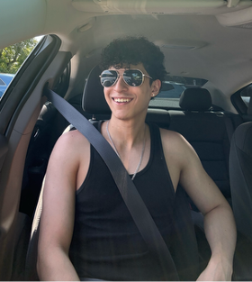

I started with design because I enjoyed making things look good, but I quickly became interested in how everything works behind the scenes. That curiosity led me to develop both design and front-end skills, allowing me to take projects from the initial concept all the way to a fully built, functional product. I've worked on multiple projects including branding, website design, UX/UI. My experience ranges from creating logos and visual identities to designing wireframes and prototypes in Figma, and finally building responsive websites using HTML and CSS. I also explore motion graphics and visual content to add more depth and engagement to digital experiences. I pay close attention to detail because I believe that strong design is not just about appearance, but about how everything flows and functions together. I focus on spacing, color theory, usability, and consistency to ensure every project I do feels cohesive, intentional, and impressive. Beyond my technical skills, I work well in collaborative environments and take responsibility when working with a team. I've had experience supporting and guiding others, managing tasks in difficult moments, and staying organized to meet deadlines. This helped me build strong communication skills and adapt quickly when challenges come up. I always look for improvements, learning new tools and skills, and push myself to create and deliver more unique results. My goal is to contribute to meaningful projects where I can grow and improve my skills while delivering work that is both visually and technically professional.